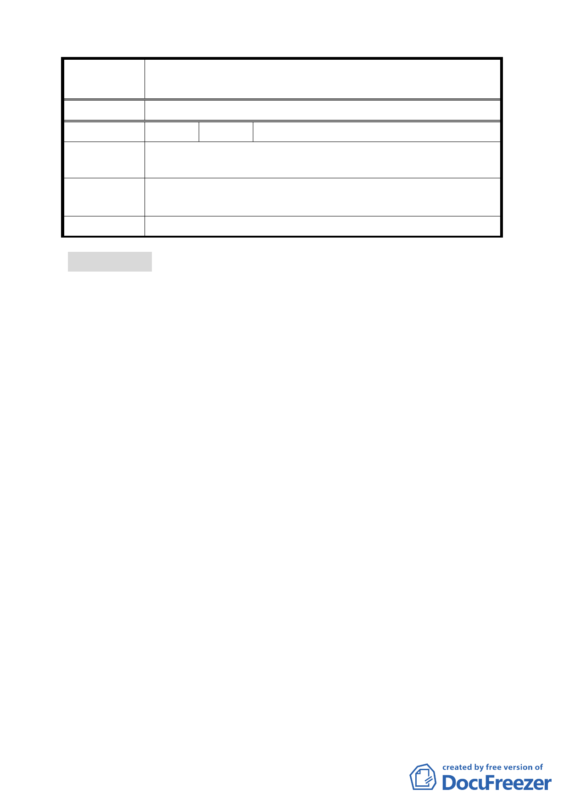

案
名
變更臺北市士林區至善段五小段 80、81、117 地號等加油站
用地為公園用地細部計畫案
委 員 會 決 議 同編號 2。
編 號 51 陳情人 黃閔蘭
陳情理由
建議辦法
可以規劃為公園或遊樂場或生態公園，讓故宮附近可以更加
優質之生活環境。
委 員 會 決 議 同編號 2。
報告事項 六
案名：劃定臺北市南港區南港段一小段 1016 地號等 27 筆土地為更
新單元
案情概要說明：
一、 本案係臺北市南港區南港段一小段 1016 地號等 27 筆土地為
更新單元，申請人李樹桐 君依都市更新條例規定申請自行劃
定更新單元案，該案經提本會 97 年 3 月 21 日第 580 次委員
會議決議：「依照本案計畫書原提案範圍通過」。
二、 後因公民陳情意見，經提 581 次委員會議審議後，增列決議：
「在不影響本會第 580 次委員會議已審議通過更新單元範圍
內相關權利關係人權益前提下，為保留西側鄰地 6 筆地號土
地納入本案進行整體規劃之可能性，有關陳情人所提 1038 地
號等 6 筆土地，如能於 3 個月內取得東側已審議通過之更新
單元申請人同意納入，並經市府審查符合劃定基準，得再提
本會同意擴大更新單元劃定範圍」。
三、 市府更新處於 97 年 5 月 7 日召開本案併鄰地擴大劃定範圍可
行性協調會，會中雙方尚未達成協議。申請人李樹桐君 97 年
7 月 29 日函文更新處說明與鄰地未達成協議，擬維持原申請
範圍。
50